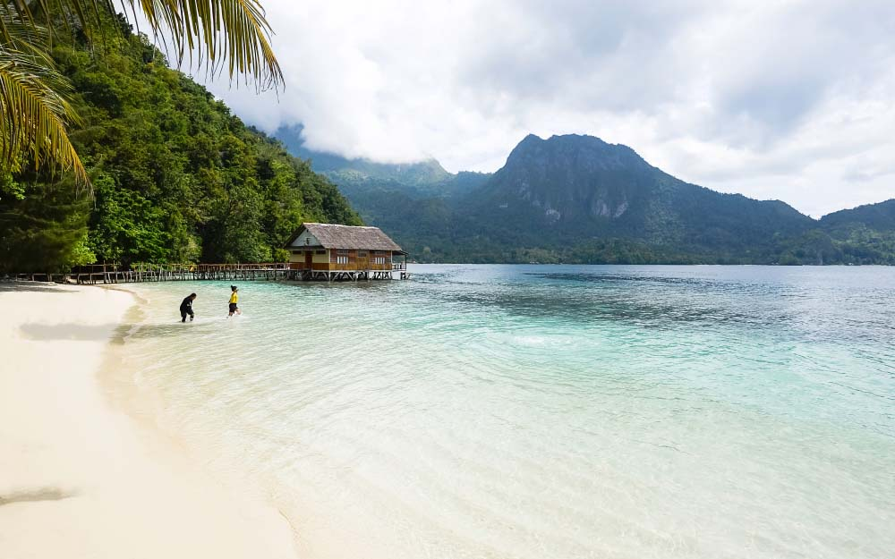

MalukuInfo
MalukuInfo
Maluku
Republik Maluku Selatan
Taal
De Molukken hebben een grote verscheidenheid aan talen en dialecten vanwege hun geografische en culturele diversiteit. Het Maleis, vooral Ambonees-Maleis, fungeert vaak als een gemeenschappelijke taal.
Geografie

Zoals te zien op de kaart, bestaat de Molukken uit twee delen. Het noorden en het zuiden. Ambon is de hoofdstad, en bevind zich op de Zuid-Molukken.
Cultuur

De Molukse cultuur is een rijke cultuur, dat ontstaan is uit tradities. De religie speelt een belangrijke rol in de taal en cultuur, met het christendom, de islam en traditionele geloven die elk invloed hebben. Veel inheemse talen worden bedreigd door het Indonesisch, vooral onder jongeren, en er zijn inspanningen om ze te behouden.
Reizen
Wilt u naar de prachtige eilanden van de Molukken?